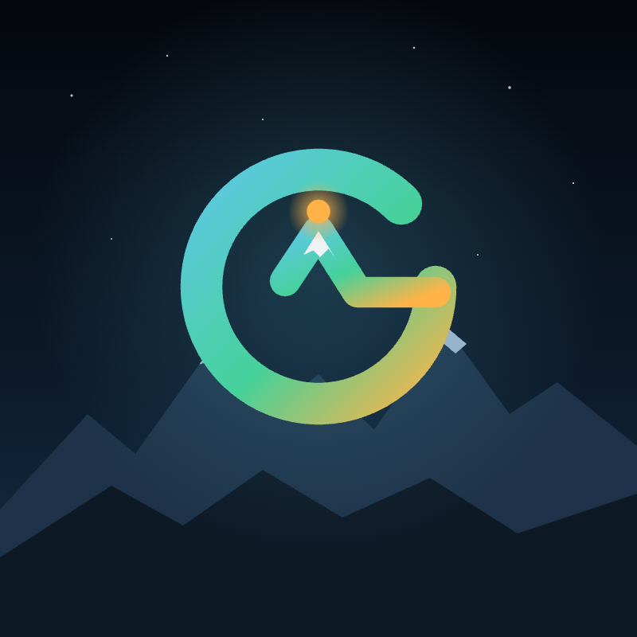

BIG G
Gloria Liu · data · AI · music · mountains
The idea
G
For Gloria. One unbroken stroke, because the work runs end to end: from the business question to the tool people use.
The peak
The crossbar of the G rises into a snow-capped mountain: seeing the world, and climbing toward the hard question instead of around it.
The node
A glowing node at the summit, the same node-and-flow language as my data tools. Data in, a clear call out.
Palette
Glacier#5EC8E5
Aurora#46D19A
Summit#FFB347
Night#07090C
Snow#EEF2F4
Type
Bricolage Grotesquedisplay · headlines and the wordmark
Source Sans 3 for readingbody · everything people read
JetBrains Mono 0.84 · $90.0Mdata · numbers, labels and code
In use

Profile picture for LinkedIn and GitHub, the browser-tab icon on every page of this site, and the header of the home page. Everything here, from the mark to the mountains, was designed and coded with AI.
See the site →